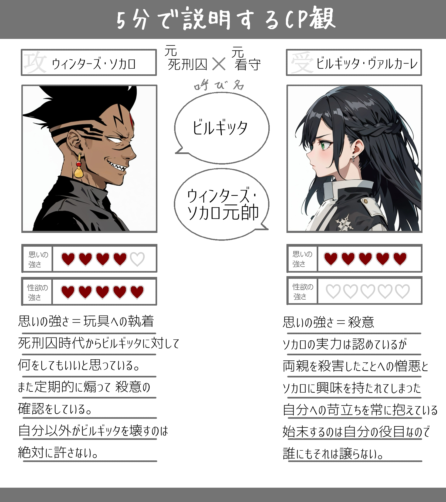

D灰
ビルギッタ･ヴァルカーレ
「魂を救う、か。私もそう思えたら良かった」「ウィンターズ･ソカロ元帥、あなたの死に時は私が決める」
《基本設定》
性別：女
年齢：27歳
身長：171cm
髪型：ロングに編み込み
髪色：黒
瞳の色：緑
ICV：園崎未恵さん
お相手：ウィンターズ･ソカロ(CP表記は ソカビル)
Ｌウィンターズ･ソカロ元帥⇔ビルギッタ
一人称：私
二人称：あなた、お前
家族構成：＊＊＊
好き・得意：珍味・ゲテモノ料理
苦手・不得意：
イメソン：〇 TRiDENT「RESISTANCE」
【概要】
エクソシストの一人で ソカロの弟子。スウェーデン人。元死刑囚であるソカロが収監されていた監獄の看守だったが、現在は立場が逆転している。普段は凛として 落ち着いた雰囲気を見せるが、感情が昂りすぎると粗野な言動が目立ち、負の感情が限界まで達すると 他人が嫌うようなゲテモノ(特にシュールストレミング)を大量にやけ食いする面がある。AKUMAに対しては特に感情を持ち合わせておらず、AKUMAを破壊するのがエクソシストとしての役目だとしっかり割り切っている。本部では 歳が近いこともあって、エクソシストとして まだ日が浅いミランダや同じく弟子であるクロウリーと話をしていることが多い。 代々 看守として囚人たちを管理する家系の生まれで、監獄時代からの名残りもあり ソカロのことのみフルネームで呼ぶ。看守時代、ソカロよりも少し早くイノセンスの適合が判明したため 教団からの誘いもあったが、エクソシストという未知のものよりも 自身の仕事を優先したため、探索部隊の見張りの元 しばらくは看守を続けていた。そんな中、家系の仕事に縛られたビルギッタの人生に退屈さを感じたソカロは、罪が増えても死刑が決まっていたこともあって 自身のイノセンス適合と同時にビルギッタの両親を殺害する。無罪放免となり 教団の入団を勧められたソカロに復讐することもかなわないビルギッタは、ソカロが教団に不利益をもたらす存在となった場合の始末を自分にさせることを条件に、教団に入団した。荒くれ者の多い監獄だったため、入団前から かなりの体術を持ち合わせている。【ソカロとの関係】
両親の仇でもあるソカロに対しては憎悪を抱いているものの、エクソシストとしての実力は本物であることは認めている。それぞれの任務に行くことが多いが、会うたびに いつでもソカロを始末する準備はしている。しかし、ソカロ自身はそんなビルギッタの様子を楽しんでいる様子を見せ、ビルギッタが突っかかるときは返り討ちにしており、もはや遊びの一貫となっている。アレンや他の団員たちと一緒にいることが増えたので、殺意が鈍っているのではとソカロが懸念することもあるが、彼への殺意だけはエクソシストの役目の裏で静かに燃えている。 ソカロの息の根を止めるのは自分だと思っているため AKUMAにやられるようなことは決して許さず、また ソカロもビルギッタを壊したりしていいのは自分だけだと思っており、お互いが強い執着心を抱いている。【原作での動き】
ホールケーキアイランド編
元帥の護衛任務で ソカロ部隊の３人と合流するために ゴーレムで連絡を取りながら、探索部隊とインドへ鉄道移動をしていたが、突然 連絡が途絶え 合流地点に向かうと 既にティキが去った後で カザーナとチャーカーは殺されていた。２人の遺体を本部に輸送する手続きをし、消息不明となったスーマンを追おうとするが 手がかりが全く無かったことから、捜索は探索部隊に任せ 自身はソカロの元へ行き 一度 本部へ帰還することを余儀なくされる。その後、スーマンが咎落ちしたことを知り 東に向かおうとするが、エクソシストの数が少ないこともあり コムイから本部での待機命令が出される。アレンたちが教団に帰ってきた後は、リナリーやミランダのお見舞いに伺っている。 ルル＝ベルによる本部襲撃では、マリやミランダ、元帥たちとともに３番ゲートへ向かい、ラボに到着する。現場では元帥たちの戦闘のおこぼれとなるレベル３を難なく片付け、「卵」に近づけさせないように動いている。ソカロが雑にAKUMAを処理し 血の雨が降り注いだときには 少し苛立ちながら槍を回転させて 自分にかからないようにしている。その後「卵」の破壊に加勢し 任務を遂行するが、進化したレベル４の力で ラボの下へ落とされる。しばらく気を失っていたが、元帥たちの直後に 目を覚まし、後を追ってヘブラスカの元へ向かう。そして 瀕死のレベル４が上に逃げようとする際は シャッターのすぐ横でスピアを構えて待機していたものの、トドメは臨界点を突破したアレンと 進化したイノセンスを発動するリナリーに任せた。 本部の引越し作業中は 団員たちがコムビタンDに感染していく様子を偶然 目撃する。逃げながら 入浴中の元帥たちへ報告に向かおうとし、フロアにたどり着いたときに 数の増えすぎた感染者に囲まれ、噛まれて感染する。そして、ソカロたちを噛んでしまい 更なる被害を生むこととなる。 その後、ノアの同時襲撃では ロシアのジカルジャンでソカロたちと共にトライドやジャスデビと対峙。AKUMAになったキレドリに手を下すことを躊躇うクロウリーとミランダの代わりに 任務としての割り切りからスピアで貫いている。シビアになれないクロウリーを窘めるソカロからは「お前は相変わらずだな」と言われ、殺意を抑えている。 アレンの捕縛に対しては 他のエクソシストと違い、特に情を持ち合わせていなかったこともあり、率先して追いかけている。しかし、AKUMAに成り下がったサードに足止めをくらい、アレンを見つけることは叶わなかった。エクソシストの数も減り、任務が多くなってきた中でも ソカロ班の古参として タフにこなしており、ソカロに殺意を抱きながらも 一緒に任務を行くこともある。【イノセンス】
戦慄ノ槍(スピア･オブ･シヴァー) 槍の形をしている装備型の対アクマ武器。シンクロ率は９３％。槍を突き刺すことでAKUMAを破壊する。投げて貫くことも可能で、その際は必ず所有者であるビルギッタのところへ戻ってくる。高速回転させることで 簡易のバリアを張ることもできるなど応用がきく。本来は２本で１セットの短槍であり、第二解放では２本を合体させて使用する。 ・戦慄ノ槍“輝き”(スピア･オブ･シヴァー“スパークル”) 槍の先に光を集めることで攻撃力を高め、一撃で貫通させる技。 ・戦慄ノ槍“轟き”(スピア･オブ･シヴァー“ロアー”) ２本に分けた槍を音が響くほど高速回転させ、ドリルのように削る技。 ・戦慄ノ槍“猛き”(スピア･オブ･シヴァー“パワー”) 槍の側面を使って 一瞬で打つ不意打ちに有効な技。イラスト：

